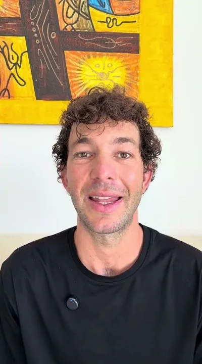
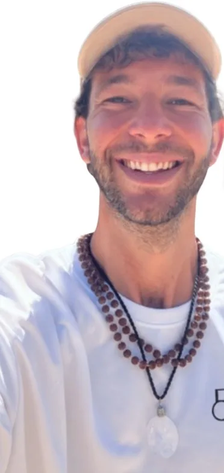

Meditación profunda y respiración
Abren la puerta: el cuerpo se suelta y graba un estado nuevo.
Aprendé a manejar tu estado desde el cuerpo en minutos, y a sostenerlo toda la vida.
Una conversación para ver si es para ti. Sin compromiso de compra.
Dejá de sobrevivir en piloto automático. Empezá a disfrutar lo que construiste.
¿Cómo se une una isla con la otra?
Pausas cortas, repartidas en tu día, que usan tu propio cuerpo para pasar de la aceleración a la calma.
El método
Abren la puerta: el cuerpo se suelta y graba un estado nuevo.
Llevan ese estado a tu día real, para que no se evapore.
El resultado: dejás de depender de lo que pasa afuera. Elegís cómo estar, y lo sostenés.
El cambio lo sentís en la primera semana. Pero sentirlo no es tenerlo instalado. En seis meses, la calma deja de ser un esfuerzo y se vuelve tu forma natural de funcionar.
Vas a seguir yendo por tus metas. Solo que ya no te van a quitar el sueño.
Pendiente de Ema: qué pasa en cada etapa de los 6 meses
Quién está detrás del método.


Jugué al fútbol hasta los 28. Si metía goles, me amaban. Si erraba, era el peor.
Cuando se terminó, no sabía quién era sin la camiseta. Llegaron la ansiedad, la soledad, la depresión. Y un cuerpo que, después de cuatro operaciones, dijo basta.
Armé esta metodología para salir de ahí. Hoy la enseño mientras recorro el mundo buscando formas cada vez más simples de aplicarla.
Una conversación para ver si es para ti. Sin compromiso de compra.
¿Le funcionó a alguien que estaba donde estás hoy?
«Llegué después de cerrar una etapa de diez años. Meditaba todas las mañanas y a media mañana ya estaba otra vez acelerada. Lo que me cambió fue usar los anclajes en momentos chicos: antes de una reunión, al llegar a casa. Hoy no espero al fin de semana para estar tranquila.»
«Pensé que era otro curso de meditación. Lo distinto fue llevarlo al día real.»
«Lo que más me sirvió: dos minutos antes de contestar un mensaje que me sacaba de quicio.»
«Las clases grupales me ordenaron la semana. Y no me sentí sola en el proceso.»
Son experiencias personales de cada alumno, no resultados de salud.
Si te reconociste en la primera lista, hay dos formas de empezar.
Los seis meses terminan. Los Puntos de Anclaje, no. Eso es lo que te llevás.
Elige el grupal si quieres aprender el método con otros y a tu ritmo.
6 cuotas de 100 USD
600 USD en total · 6 meses por confirmar
Elige la 1:1 si quieres un mapa de ruta propio y a Ema contigo cada 15 días.
3.500 USD
≈ 583 USD al mes durante 6 meses por confirmar
Pendiente de Ema moneda final, pago con tarjeta desde cualquier país, garantía y un testimonio corto.
Elige un día con horarios disponibles.
Lo que más preguntan antes de empezar.
No. Es una mentoría de desarrollo personal; se diferencia de la psicoterapia y no tiene función diagnóstica ni clínica. Si lo que estás pasando necesita un médico o un terapeuta antes que un mentor, Ema te lo dice en la llamada y te orienta.
Pendiente de Ema Por ejemplo: una práctica principal de X minutos y anclajes de 1 a 2 minutos repartidos en el día.
Pendiente de Ema
Pendiente de Ema Por ejemplo: queda grabada en la plataforma.
Ema te pregunta qué te trajo, te cuenta cómo funciona cada formato y te dice con honestidad si es para ti. No hay que comprar nada en la llamada.
Pendiente de Ema Es una de las preguntas que más aparece en los comentarios de Instagram.
Pendiente de Ema Por ejemplo: sí, desde cualquier país.
La mentoría grupal, en 6 cuotas por Mercado Pago. La mentoría 1:1, por Stripe. moneda por confirmar
Una conversación para ver si es para ti. Sin compromiso de compra.